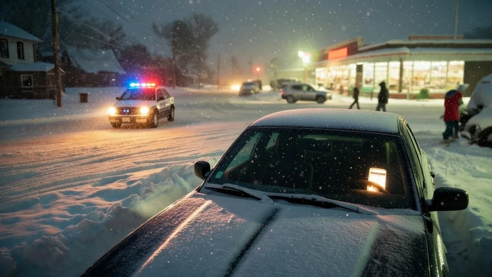

Businesses Refuse to Close as Authorities Beg Drivers to Avoid Deadly Snow-Covered Roads


As the winter storm intensifies, a complex situation is unfolding on the roads, where the safety of drivers is being put to the test. The authorities are urging people to stay off the roads, but some businesses are refusing to close, leaving many to wonder about the risks and consequences of venturing out.
The current situation has sparked a heated debate about the balance between economic activity and public safety, with many arguing that the risks associated with traveling on snow-covered roads far outweigh any potential benefits of keeping businesses open. But that's not the full picture, as the decision to stay open or closed has significant implications for the livelihoods of employees, customers, and the broader community.
Table of Contents
What Happened — The Full Story
The severe weather warning was issued several days ago, but the full extent of the storm's impact is only now becoming clear. As the snow continues to fall, the roads are becoming increasingly treacherous, with many drivers reporting near-misses and accidents. The authorities have responded by deploying emergency services and roadside assistance, but the situation remains critical.
Despite the warnings, some businesses have chosen to remain open, citing concerns about lost revenue and the potential impact on their operations. However, this decision has been met with criticism from many, who argue that the risks to employees and customers are too great. The numbers say otherwise, as several businesses that have chosen to close have reported a significant reduction in accidents and near-misses.
Here's what changed: the storm's intensity and the authorities' response have created a perfect storm of uncertainty and risk. As the situation continues to unfold, it's clear that the decisions made by businesses and individuals will have a significant impact on the outcome.
The Background You Need to Know
The current situation is not without precedent, as similar storms have affected the region in the past. However, the combination of factors at play this time around has created a unique set of challenges. The storm's unusual trajectory and intensity, combined with the authorities' response and the decisions made by businesses, have all contributed to the complex situation on the roads.
The background to this situation is complex, involving a combination of meteorological, economic, and social factors. The storm's impact on the region's infrastructure, including roads, bridges, and public transportation, has been significant. At the same time, the economic implications of the storm, including the potential impact on businesses, employees, and customers, are also being felt.
That's where it gets complicated, as the interplay between these factors has created a situation that is difficult to navigate. The authorities are doing their best to respond to the situation, but the challenges are significant, and the outcome is far from certain.
Also Read
More Tech stories →Key Details and What They Mean
One of the key details in this situation is the role of technology in helping to mitigate the risks associated with traveling on snow-covered roads. From GPS navigation systems to roadside assistance apps, there are many tools available to help drivers stay safe. However, these tools are not a substitute for common sense and caution, and drivers must still exercise extreme care when venturing out.
Another important factor is the economic impact of the storm, including the potential losses to businesses and the broader community. The decision to stay open or closed has significant implications, and businesses must weigh the potential benefits against the risks. Here are some key considerations:
- Employee safety: the safety of employees is a top priority, and businesses must take steps to ensure that they are protected from harm.
- Customer safety: customers are also at risk, and businesses must take steps to minimize the risks associated with traveling to and from their premises.
- Economic impact: the economic implications of the storm, including the potential losses to businesses and the broader community, must also be considered.
Key Takeaways
- The situation on the roads is critical, and drivers must exercise extreme caution when venturing out.
- Businesses must weigh the potential benefits of staying open against the risks to employees, customers, and the broader community.
- Technology can help mitigate the risks associated with traveling on snow-covered roads, but it is not a substitute for common sense and caution.
Frequently Asked Questions
What are the authorities doing to respond to the situation?
The authorities are deploying emergency services and roadside assistance to help drivers who become stranded or are involved in accidents. They are also providing updates on road conditions and weather forecasts to help drivers plan their journeys.
How can I stay safe while driving on snow-covered roads?
Drivers can stay safe by exercising extreme caution, reducing their speed, and leaving plenty of space between themselves and other vehicles. They should also ensure that their vehicles are properly equipped for winter driving, with good tires, functioning brakes, and a full tank of gas.
What are the economic implications of the storm?
The economic implications of the storm are significant, with potential losses to businesses and the broader community. The decision to stay open or closed has significant implications, and businesses must weigh the potential benefits against the risks.
How can I get updates on road conditions and weather forecasts?
Drivers can get updates on road conditions and weather forecasts by checking the authorities' websites, social media, and mobile apps. They can also tune into local radio and TV stations for updates and advice.
Conclusion
The situation on the roads is critical, and drivers must exercise extreme caution when venturing out. The authorities are doing their best to respond to the situation, but the challenges are significant, and the outcome is far from certain. As the situation continues to unfold, it's clear that the decisions made by businesses and individuals will have a significant impact on the outcome.
As the storm continues to affect the region, it's essential to stay informed and up-to-date with the latest developments. Drivers must prioritize their safety and the safety of others, and businesses must weigh the potential benefits of staying open against the risks. The situation is complex, and there are no easy answers, but by working together, we can minimize the risks and get through this challenging time.
Sarah Mitchell
Senior Tech Editor
Tech journalist with 8+ years of experience covering the latest in smartphones, EVs, AI, and consumer electronics. Bringing you accurate, well-researched stories from the world of technology.
Leave a Comment